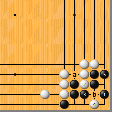
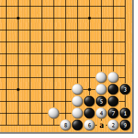
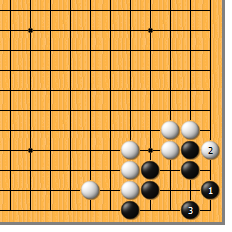
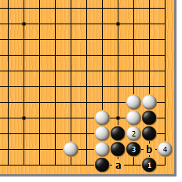
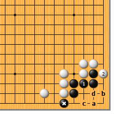
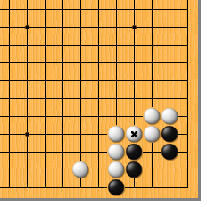
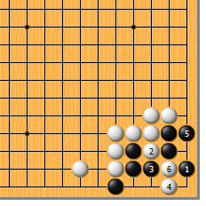

|  |  | |
| 图1 此形黑有一扳，所以刚好能活。黑1尖是好手，白2冲、4点均是急所，然而黑5做眼，恰好成活。请注意，a位空一气是黑的生命线，否则白于b位断，黑两边不入气。
| 图2 黑1时，白2直接点，也是厉害的一手。黑3只好做眼，白4、6似乎成劫，然而黑7、9从背后收气，白接不归。当然，实战中黑7应先于a位提（有便宜先赚嘛）。 | |
|  |  | |
| 图3 黑1时，白2如扳，则黑3倒虎，活得干干净净。黑占据了两个急所，一般总是活棋。
| 图4 黑1跳补，能做活吗？白还是2冲、4点，接下来黑如a位做眼，白b位断，黑两边不入气。关键在于黑没有护住气紧的弱点。 | |
|  |  | |
图5 黑1如粘，白2一扳黑就死了。而后黑a则白b。黑*子如先走c位，则白d点。黑*子在此未发挥作用。 | 图6 如果白*子已紧气，黑还能做活吗？（好像不用站长多说了吧？）
| |
|  | 您的高见 | |
图7 黑1如尖，白2冲、4点、6断，黑简单不行。当然白2直接于4位点也行。 |